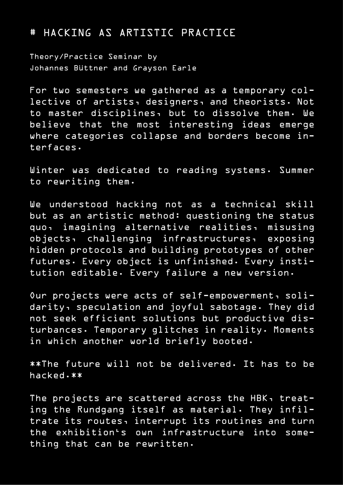
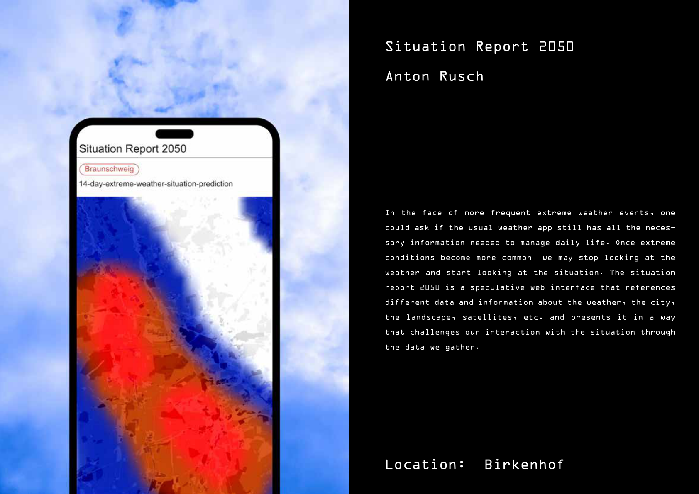
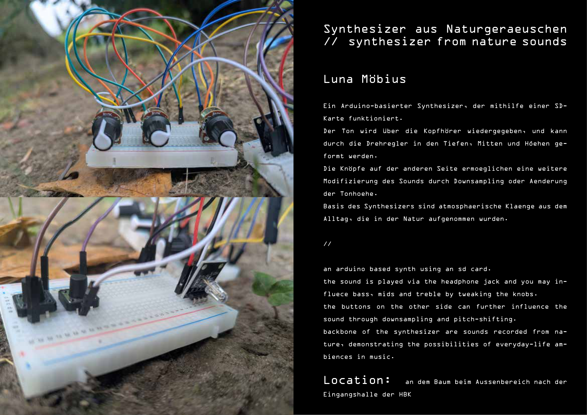
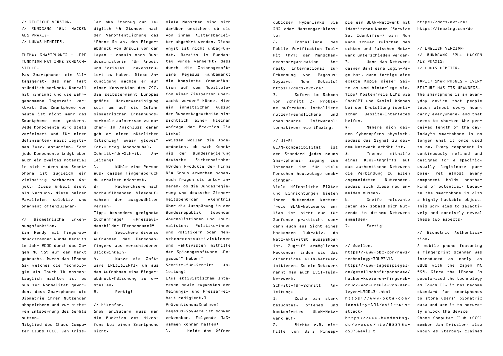
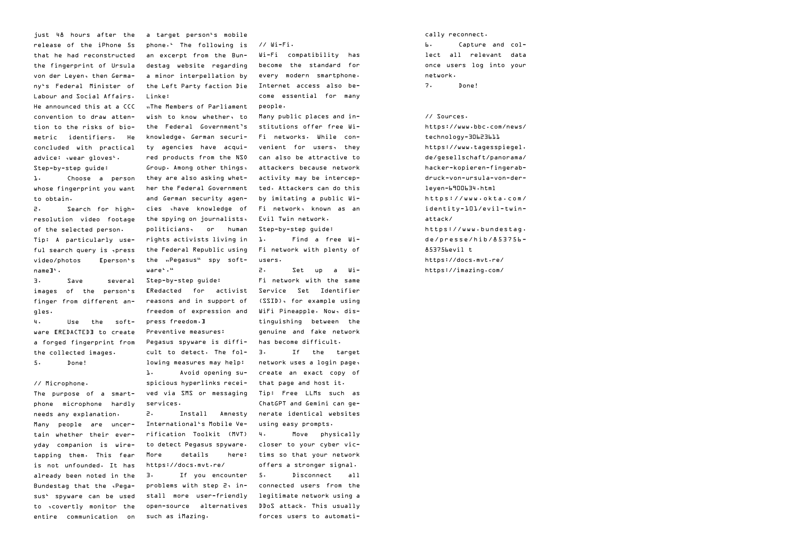
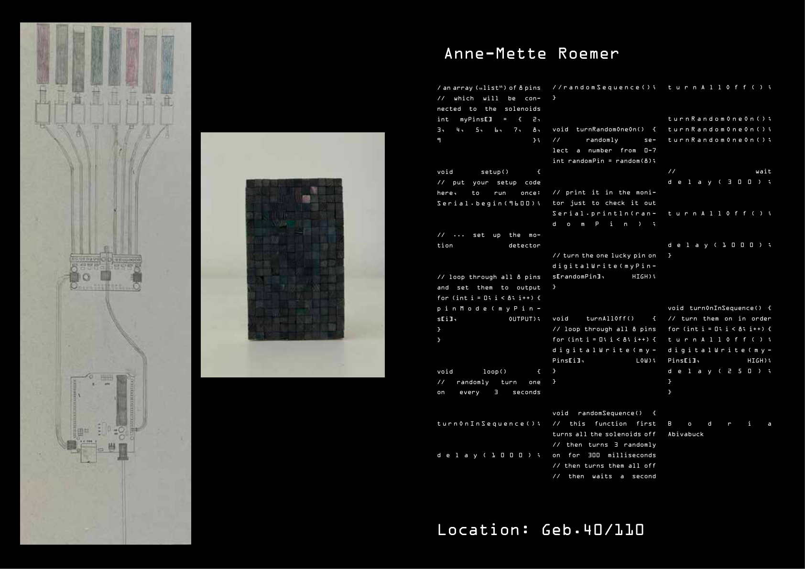
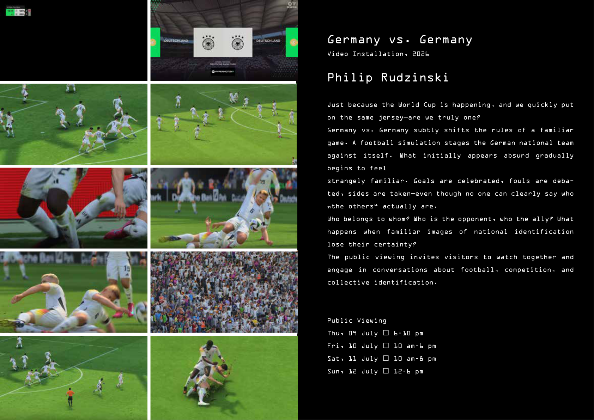
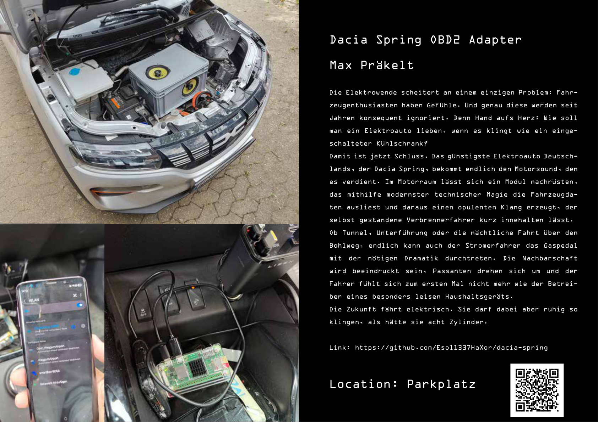

HBK Braunschweig
Hacking als Praxis ("Hacking as a Creative Practice")
In this course, we examine hacking not just as a technical exploit, but as a critical artistic and political practice. Students explore tactical media, subvert digital infrastructures, and unpack the hidden politics embedded in software, games, and networks. Taking inspiration from guerrilla projection, software modifications, and hardware tracking, we develop creative interventions that challenge authority, surveillance, and corporate logistics.
Student Publication
As a collective final outcome, students collaborated on a printed fanzine titled HACKEN. The publication documents their tactical research, subversions, and experiments. Browse the pages below or download the complete PDF.








Schedule
Session 01: The Art of Subversion & Tactical Media
Week 1
Introduction to tactical media history. Case studies of artistic interventions (e.g., Bail Bloc, The Illuminator, RTMark). Understanding systems as artistic mediums.
Assignment
Identify a physical or digital system in your daily life and document its rules, constraints, and points of vulnerability.
Session 02: Deconstructing Code & Algorithmic Authority
Week 2
Code as law and ideology. Analyzing the rules governing digital spaces, including game engines, physics systems, and police behaviors in simulations. Textual analysis of code.
Assignment
Write a critique of a specific system rule or boundary in a popular software, website, or game.
Session 03: Physical Interventions & Guerrilla Projections
Week 3
Reclaiming public space. The logistics and aesthetics of guerrilla projection. Mobile projection setups, urban hacking, and public display safety/legality.
Assignment
Design a blueprint for a mock public projection intervention focusing on a local political or social issue.
Session 04: Hardware Modification & Counter-Surveillance
Week 4
Subverting commercial electronics. Tracing logistics networks (GPS tracking, hidden audio, logistics transparency) and reclaiming consumer hardware for counter-narratives.
Assignment
Create a proposal for tracing or subverting an opaque supply chain, tracking mechanism, or surveillance tool.
Session 05: Network Interventions & Digital Commons
Week 5
Alternative networks, net-art, and decentralized structures. Software tools for community resistance, mutual aid, and self-hosted communication.
Assignment
Prototype a simple offline or mesh-network concept using open-source tools.
Session 06: Student Project Proposals & Critique
Week 6
Pitching project ideas. Peer-review of concept papers and blueprints. Refinement of technical approaches and artistic statements.
Deliverable
Project proposal document (1 page + conceptual sketch).
Session 07: Development and Prototyping Workshop
Week 7
In-class hacking session. Individual troubleshooting of software, hardware, and physical assemblies. Iteration on prototypes.
Deliverable
Functional alpha prototype of the intervention.
Session 08: Final Showcase & Public Discourse
Week 8
Exhibition and presentation of student hacks. Critical discussion of the social, political, and aesthetic implications of the works.
Deliverable
Completed subversive intervention or prototype and documentation.